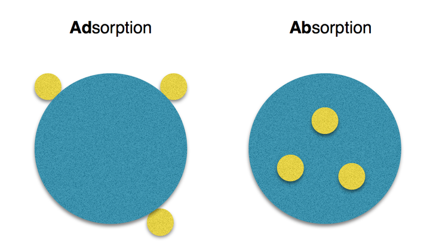
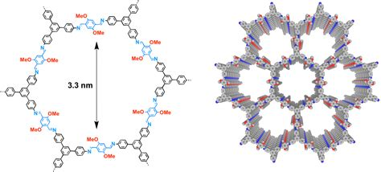

Research
I am currently an research assistant for the Simon Ensemble, a research group at OSU applying machine and deep learning techniques to the prediction and analyzation of nano-porous materials used in applications such as gas storage, separation and sensing.
Message Passing Neural Networks for Gas Adsorption Predictions of Nano-Porous Materials
What is a Nano-Porous Material?
I know this title is a mouthful but it's actually super cool and could be extremely important in mitigating climate change! I will try and explain how me and a team of two other undergraduates are working on a machine learning model that can predict how well a material can adsorb a gas.
Nano-porous materials (NPMs) are cyrstaline structures with exception capabilities of storing, sensing and seperating gas. They do this by adsorbing the gas into the tiny pores of their structure. It took me about a month to realize there was a differnce between ADsorption and ABsorption so hopefully this will clear that up.
The tiny pores in a NPMs allow for a greater surface area and thus more gas molecules can attach to it. The ability for a NPMs to adsorb a certain gas is called its adsorption isotherm and this was what we are interested in predicting.
The set NPMs we were most interested in predicting adsoprtion isotherms for are called Covalent Organic Frameworks (COFs) and they look liket this.
You can see the pores in the 3d structure that are capable of storing gases. COFs have been found to be extremely efficient in the storage of hydrogen. Hydrogen, when stored efficiently can be used in powerful fuel cells that offer a clean alternative to fossil fuels.
COFs are constructed by combining together organic precursors to form a strong crystaline bond. In theory, there are hundreds of thousands of unique COFs that could be synthesized by combining these organic precursors. But they are expensive to develope and you want to know that the COF you make might be good for something. It would be really helpful if there was a quick way to figure out which COF might be the most efficient in storing certain gases!
Graph Neural Networks
Message Passing Neural Networks (MPNNs) are a type of Graph Neural Network, that learns a intricate relationship between nodes in a graph to then make a prediction. This Distill article A Gentle Introduction to Graph Neural Networks will explain MPNNs much better than I ever could and has fun graphics to play around with! But at a high level, we want to take the molecular graphs (like the ones from chemistry class), encode them as lists in the computer and then iteratively pass information between the nodes to create a new vector representaion of the graph. A prediction is then made on this graph and the loss is computed. The learnable parameters in our model (some in message passing functions) are then updated to hopefully improve the prediction next time. What is interesting is that the learned vector graph representation is really just a biproduct of our model, but can be very as I will explain later on due to the task prediction knowledge encoded in it.
To be continued...